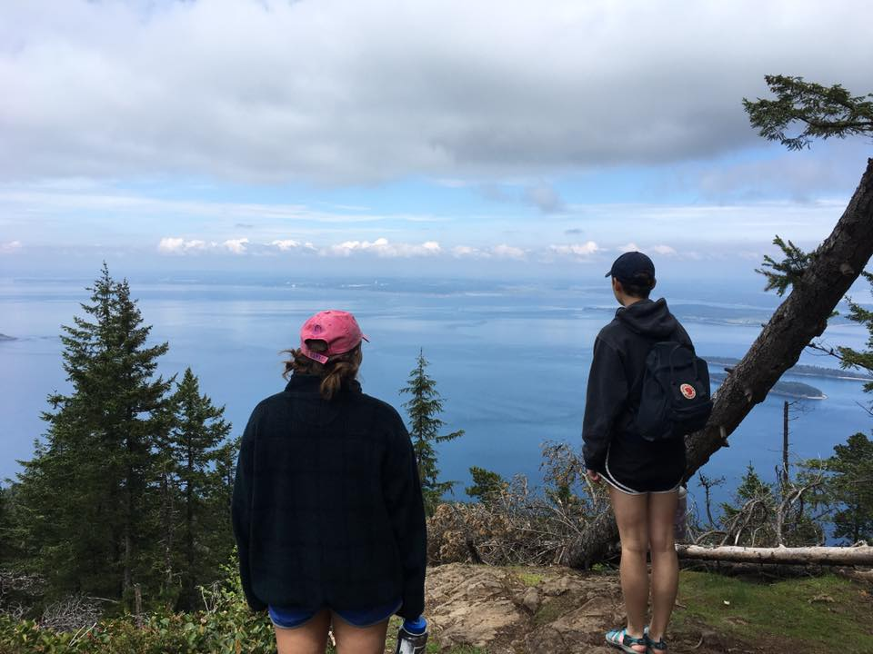
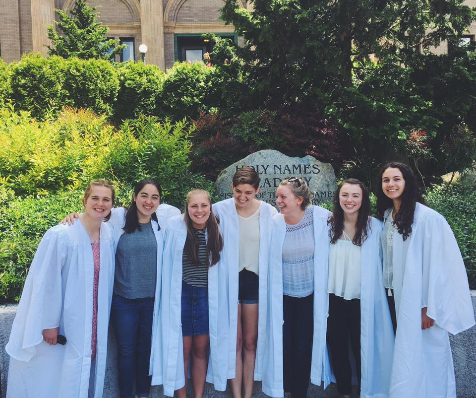

The fam (Dad, Mom, Me, Caroine Kaitin)

Helen and I at Mount Constitution
My closest friends and I at grad :)
Camp friends!

i honestly can't stress how important this vine is https://t.co/39JXOYfNj0
— shibesbot (@shibbnbot) November 15, 2016